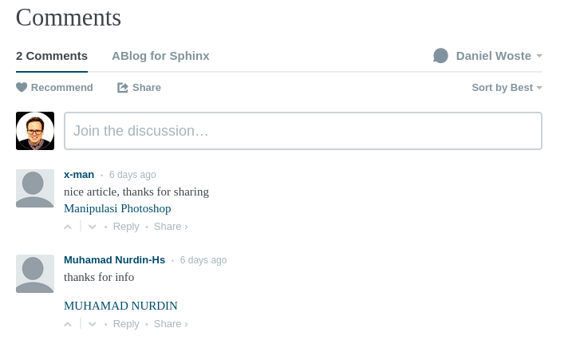
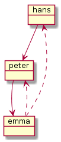
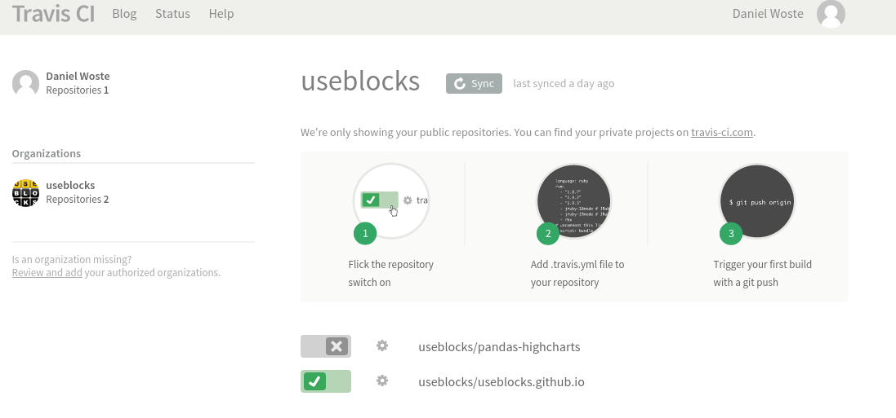
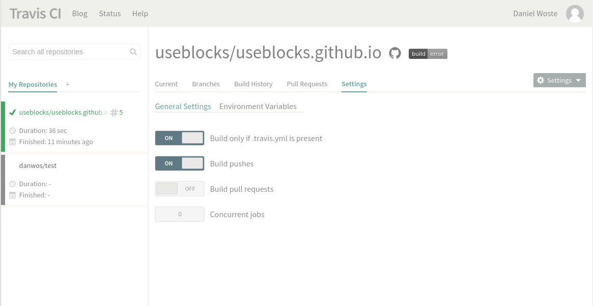
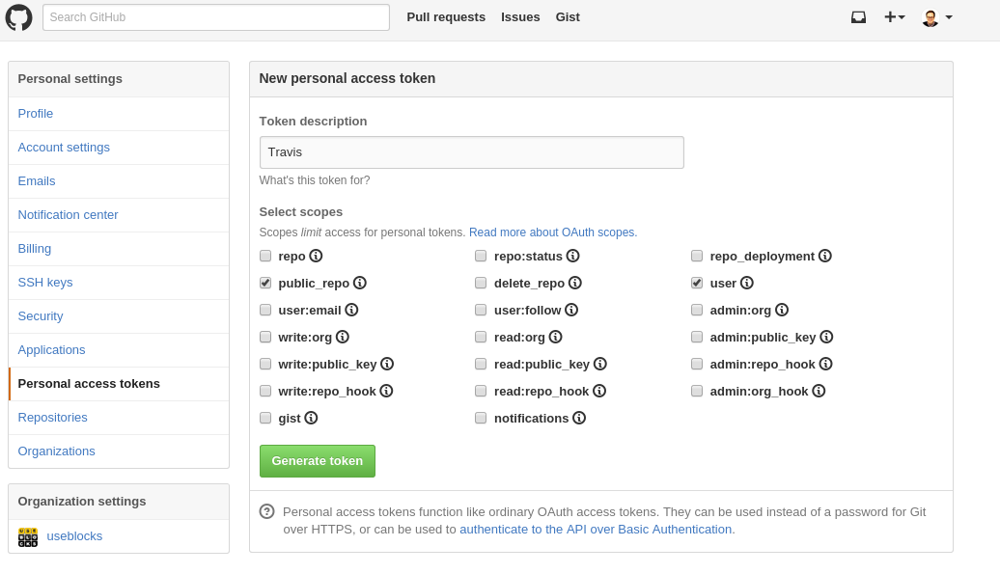
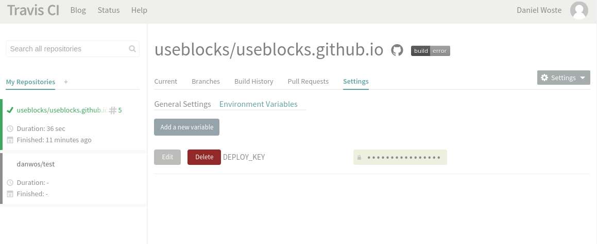

Der perfekte Blog für Entwickler¶
Ich habe in den letzten Jahren ein paar Blog-Systeme getestet und da mir die Systeme keinen Spaß gemacht haben bzw. zahlreiche Funktionen zu kompliziert implementiert waren oder einfachste Sachen gar fehlten, habe ich das Bloggen oft schnell eingestellt.
Damit soll jetzt Schluss sein und ich habe versucht ein Blog-System aufzusetzen, das viel Arbeit abnimmt und das sich von der eigentlichen Tätigkeit eines SW-Entwicklers, dem Code schreiben, nicht zu sehr unterscheidet.
Willkommen bei meinem Tutorial über die geilste Blog-SW-Umgebung für die faulsten und damit besten Entwickler der Welt.
Wir werden Folgendes zusammenenbauen (Details in den jeweiligen Kapiteln):
- GitHub pages / github.io: Als Speicherplatz und Server für unseren Blog
- Sphinx mit Restructured Text: Als einfaches System zum Schreiben von Texten/Dokumenten
- ABlog: Eine Sphinx-Erweiterung, um aus Sphinx einen Blog zu machen
- Disqus: Als Kommentar-Möglichkeit für den Blog
- PlantUML: Für die Erstellung von Diagrammen
- TravisCI: Zum automatisierten Bauen des Blogs, sobald Änderungen vorgenommen wurden
GitHub: Speicherplatz und Blog-Auslieferung¶
GitHub ist perfekt zum Speichern von Code und Dank GitHub pages auch perfekt zum Ausliefern von statischen HTML-Inhalten, was unser Blog zum Glück ist.
Von GitHub pages kann man seine projekt/repository-spezifischen Seiten hosten lassen oder aber auch genau eine Seite für seinen Account oder dem seiner Firma. Ich gehe hier davon aus, dass wir eine accountspezifische Seite erstellen wollen. Daher muss man in GitHub folgendes Repository anlegen: ACCOUNTNAME.github.io
Bemerkung
Bei einer Seite für ein Projekt darf es kein extra Repository sein. Sondern im Projekt-Repo muss ein Branch gh_pages angelegt werden, in dem die folgenden Schritte dann angewendet werden müssen.
GitHub erwartet, dass im Branch master auf der obersten Ebene eine index.html Datei vorhanden ist. Diese wird dann bei Aufruf von http://ACCOUNTNAME.github.io ausgeliefert.
Auf der GitHub-Seite lassen wir für unser Repository auch gleich einen neuen Branch anlegen: sources. Dieser Branch enthält später die orginallen Blog-Dateien (Posts, Config, Themes, …), während der Branch master nur die generierten HTML-Seiten (den fertige Blog) enthalten soll.
Wir öffnen nun eine Konsole und führen Folgendes aus:
cd WORKSPACE
git clone http://github.com/ACCOUNTNAME/ACCOUNTNAME.github.io -b sources
cd ACCOUNTNAME.github.io
mkdir _website
cd _website
git clone http://gothub.com/ACCOUNTNAME/ACCOUNTNAME.github.io -b sources master
Die Erklärung im Detail
- Zeile 1: Hier in ein Verzeichnis wechseln, dass man eventuell für all seine Projekte verwendet.
- Zeile 2: Wir klonen das Projekt, aber direkt den Branch sources.
- Zeile 3: In das (noch leere) Projekte-Verzeichnis wechseln. Dies wird später unsere Blog-Daten enthalten.
- Zeile 4: Das Verzeichnis _website wird später von ABlog angelegt, um dort den generierten Blog zu speichern. Wir kommen dem zuvor.
- Zeile 5: Wir klonen den Branch master, damit wir nach der Blog-Generierung hier später unseren Blog einfach commiten können.
Bemerkung
Ich weiß, wir haben jetzt ein git-Repository innerhalb eines git-Repositories geklont. Ganz böser Stil. Eleganter wäre die Verwendung von git submodules.
Wir wechseln wieder für den Branch sources ins Verzeichnis WORKSPACE/ACCOUNTNAME.github.io und legen dort die Datei .gitignore mit folgendem Inhalt an:
# ABLOG stuff
_website/
useblocks.github.io/
.doctrees
.doctrees/
Dies sorgt dafür, dass in dem Branch sources die generierte Webseite nicht mitgespeichert wird.
Sphinx and ABlog¶
Erstmal Sphinx und ABlog installieren.
Für Linux auf Systemebene:
sudo apt-get install python-sphinx
# Danach
pip install -U ablog
# Falls Python3 geünwscht ist, python3-sphinx und pip3 verwenden
Falls Python schon installiert ist oder eine Virtual Environment verwendet werden soll:
pip install sphinx
pip install -U ablog
Danach können wir unseren Blog anlegen lassen:
cd WORKSPACE/ACCOUNTNAME.github.io
ablog start
Nun werden ein paar Daten abgefragt, ein ENTER übernimmt die empfohlene Vorauswahl in den [ ]-Klammern. All diese Optionen können auch noch nachträglich ohne Probleme geändert werden.
Wenn das abgeschlossen ist, kann man seinen Blog bauen und lokal ausliefern lassen:
ablog build # Baut den Blog im Verzeichnis _webseite
ablog serve # Startet einen kleinen Server und öffnet den Browser mit dem Blog
Man kann den eingebauten ABlog-Server so konfigurieren, dass er bei Änderungen an den Blog-Quelldateien den Blog direkt neu baut und wieder ausliefert. Dafür muss noch watchdog installiert werden:
pip install watchdog
Jetzt reicht ein ablog -r, um immer den aktuellen Stand im Browser zu sehen.
Conf.py¶
Wir müssen nun ein paar Änderungen an der Sphinx-Konfigurationsdatei vornehmen, die mit in eurem Blog-Verzeichnis angelegt wurde. Öffnet die conf.py und ändert folgende Parameter (Evtl. müssen 1-2 Sachen auch ganz neu gesetzt werden):
blog_baseurl = "http://ACCOUNTNAME.github.io"
github_pages = "ACCOUNTNAME" # ohne github.io
post_date_format = '%d.%m.%Y' # Falls das deutsche Datumsformat verwendet werden soll
today_fmt = ' %d.%m.%Y' # Siehe oben :)
Weitere Einstellungen
Sphinx, ABlog und auch das standardmäßig verwendete Theme Alabaster besitzen eine Menge Konfigurationsparameter, die interessant und nützlich sein können. Schaut dazu am besten in deren Doku rein.
Falls ihr die conf.py dieses Blogs anschauen wollt, diese findet ihr hier: https://github.com/useblocks/useblocks.github.io/blob/sources/conf.py
ABlog verwenden¶
Ok, das Thema würde diesen Post bei weitem sprengen. Schaut dazu bitte bei ABlog vorbei.
Disqus¶
Disqus ist eine Kommentar-Plattform, die sich in Webseiten einbinden lässt.
Die Kommentare erscheinen unterhalb des jeweiligen Blog-Eintrages und Besucher eures Blogs können dort Kommentare direkt hinterlassen.
Disqus selbst bietet eine Reihe von Funktionen, damit ihr die Kommentare sinnvoll moderieren könnt: Bestätigung für Veröffentlichung, Wort-Filter, Spam-Checks, ….
Damit ihr Disqus intergrieren könnt, müsst ihr einen Account haben und eure Website registrieren.
Warnung
Damit ist nicht die Registrierung eines Channels gemeint! Das ist was anderes, kann z.Z. nicht gelöscht werden und führt nur zu Verwirrungen. Also folgenden Screenshot ansehen :)
Disqus vergibt einen shortname für eure Website. Den braucht ihr, um ihn in die conf.py einzutragen:
disqus_shortname = "YOUR_SHORTNAME"
Das war’s auch schon mit Disqus und euer Blog sollte nun Kommentare unterstützen.
First Deploy¶
Um überprüfen zu können, ob wirklich alles richtig funktioniert (gerade Disqus mag lokal nicht gehen), laden wir nun den Blog auf GitHub hoch:
cd WORKSPACE/ACCOUNTNAME.github.io
ablog build # Blog bauen
# Sources sichern
git add -A
git commit -m "Changed config to use disqus and other features"
git push origin sources
# Webseite/Blog veröffentlichen
cd _website
git add -A
git commit -m "Changed config to use disqus and other features"
git push origin master
Das war’s. Unter http://ACCOUNTNAME.github.io sollte der Blog nun online sein.
Den letzten Schritt kann auch ABlog übernehmen wenn in der conf.py github_pages richtig gesetzt ist. Dann reicht auch Folgendes aus:
ablog deploy
Was genau passiert, kann man hier nachlesen: http://ablog.readthedocs.org/manual/deploy-to-github-pages/#deploy-to-github-pages
Diagramme mit PlantUML¶
Falls man im Blog öfters Klassen-Diagramme oder Ablaufpläne veröffentlichen möchte, dann kann man auch noch PlantUML in die Blog-SW einbinden. Dazu habe ich folgenden Artikel verfasst: Effektive Diagrammerstellung mit PlantUML
Um Lust auf mehr zu machen: Mit PlantUML wird aus Folgendem:
.. uml::
object hans
object peter
object emma
hans --> peter
peter --> emma
emma ..> peter
emma ..> hans
…im Post schnell und einfach dieses Bild:

TravisCI¶
TravisCI kann dazu benutzt werden den Blog immer dann automatisch zu bauen und zu veröffentlichen, wenn im Branch sources Änderungen gepusht wurden.
Da GitHub es erlaubt, Dateien direkt auf ihrer Webseite zu editieren kann man also auch auf diese Weise den Blog updaten, ohne das man Zugriff auf sein eigenes System haben muss. Eine Rechner mit einer Internentverbindung reicht aus.
Das notwendige Vorgehen:
- Auf http://travisci.org mit dem GitHub-Account anmelden.
- Repositiory aussuchen und aktivieren.
- Im Branch sources eine .travis.yml als Konfigurationsdatei für TravisCI erstellen.
Anmeldung und Config bei TravisCI¶
Nach der Anmeldung muss das richtige Repository unter Accounts aktiviert werden.
Danach auf das Zahnrad klicken und im Tab Settings Folgendes einstellen:
Build only if .travis.yml is present: Da wir diese Datei nur im Branch sources anlegen werden und auch nur bei Änderungen in diesem Branch der Blog neu gebaut werden muss, verhindern wir so, dass auch bei Änderungen in anderen Branches wie z.B. master TravisCI aktiv wird.
Build pushes: Bauen, wenn Änderungen gepusht wurden.
Build pull request: Deaktivieren, da es für uns keinen Sinn macht zu bauen, wenn wir eine lokale Kopie ziehen.
Damit TravisCI den gebauten Blog auch auf GitHub veröffentlichen darf, braucht es einen Access Token. Den bekommt man auf GitHub unter Settings –> Personal access tokens.
Diesen teilt man TravisCI über die Environment Variable DEPLOY_KEY mit.
Wichtig: Display value in build logs sollte auf Off stehen, wenn man nicht will, dass andere mit dem Key ebenfalls Änderungen am Blog einspeisen dürfen.
Als letzter Schritt bleibt jetzt nur noch das Anlegen der .travis.yml Datei im Branch sources:
cd WORKSPACE/ACCOUNTNAME.github.io
nano .travis.yml
Dort Folgendes eintragen:
language: python
python:
- "3.4"
sudo: required
before_install:
- "sudo apt-get install graphviz"
install:
- "pip install ablog"
- "pip install sphinxcontrib-plantuml"
script:
- ablog build
after_success:
- git config --global user.name "Daniel Woste"
- git config --global user.email "daniel.woste@useblocks.com"
- git config --global push.default simple
- ablog deploy --push-quietly --github-token=DEPLOY_KEY -m="`git log -1 --pretty=%B`"
Es muss für den eigentlichen Build Software installiert werden, damit auch alles klappt. Das sind vor allem ABlog und PlantUML.
Für PlantUML muss auch graphviz installiert werden. Dies geht allerdings nicht über pip, so dass wir es über den Linux-Packet-Manager installieren müssen. Da dieser Roo-Rechte braucht, müssen wir die Zeile sudo: required setzen.
Bemerkung
sudo: required führt dazu, dass unser Build nicht in einer Docker-Umgebung sondern auf einer virtuellen Maschine läuft, auf der man per sudo Root-Rechte bekommen kann.
Das eigentliche Deployen übernimmt ABlog für uns. Daher ist es wichtig, dass die Parameter github_pages in der conf.py richtig gesetzt ist.
Bemerkung
Es gibt vom ABlog-Autor selbt einen guten Post über die Verwendung von TravisCI: http://ablog.readthedocs.org/manual/auto-github-pages-deploys/